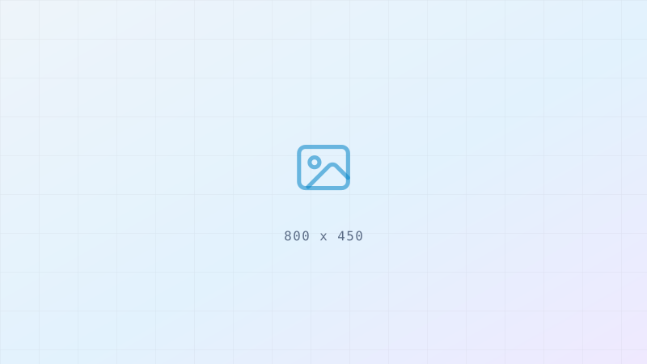

B2B SaaS
DR 22 → 78
Rebuilding authority after a migration
A botched replatform cost this client two thirds of its referring domains. We mapped what was lost, prioritised the pages that had been earning, and rebuilt the graph around them rather than chasing raw volume.
- REFERRING DOMAINS
- +412
- ORGANIC
- +186%
- MONTHS
- 11